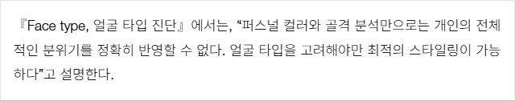
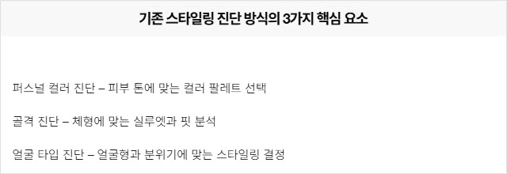
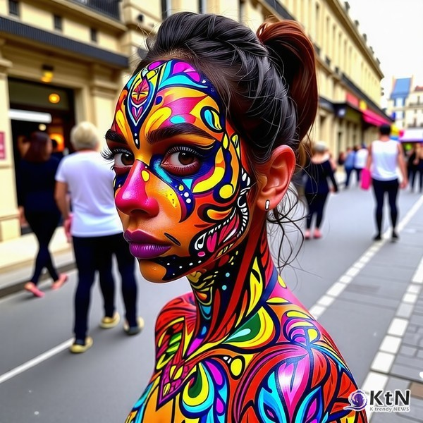
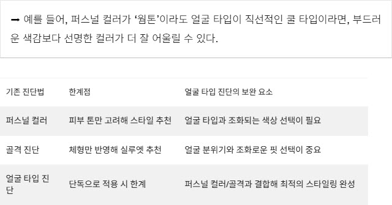
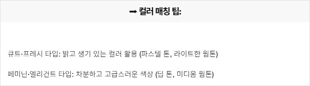
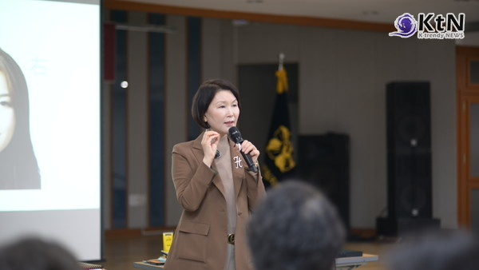
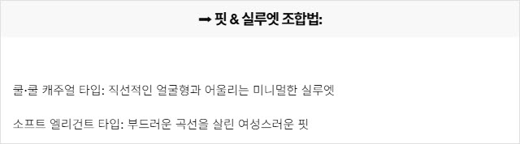
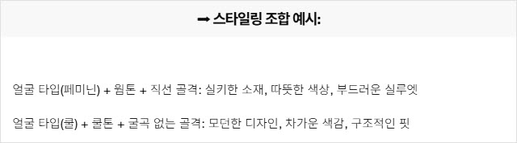

CMK NEWS
| 제목 | [이미지 컨설팅 리포트] 퍼스널 컬러·골격 진단을 넘어서 - 얼굴 타입 진단이 중요한 이유 |
|---|---|
| 작성자 | 관리자 |
| 등록일 | 2025-02-20 |
| 조회수 | 228 |
|
✔ 기존 스타일링 진단법의 한계를 넘어, 얼굴 타입 진단이 필수 요소로 자리 잡다
박보영, 청순하면서도 우아한 스타일링으로 시선 집중
[KtN 박준식기자] 퍼스널 컬러·골격 분석만으로는 부족하다 – 얼굴 타입이 핵심이 되는 시대, 스타일링을 결정하는 가장 중요한 요소는 무엇일까? 과거에는 퍼스널 컬러(Personal Color)와 골격 진단(Body Structure Analysis)이 스타일링의 주요 기준이었다. 하지만 이제는 얼굴 타입(Face Type)이 퍼스널 이미지의 완성을 결정하는 핵심 요소로 떠오르고 있다.

CMK이미지코리아 조미경 대표는 이에 대해 “얼굴 타입은 단순한 얼굴형이 아니라, 사람의 분위기와 인상을 결정하는 중요한 요소”라며, “골격과 퍼스널 컬러를 넘어, 얼굴 타입을 기반으로 한 스타일링이 가장 정교한 이미지 연출법”이라고 강조한다. [기존 스타일링 진단법의 한계] 왜 얼굴 타입 분석이 필요한가?

 퍼스널 컬러가 ‘웜톤’이라도 얼굴 타입이 직선적인 쿨 타입이라면, 부드러운 색감보다 선명한 컬러가 더 잘 어울릴 수 있다.
『Face type, 얼굴 타입 진단』에서는, “퍼스널 컬러와 골격만 고려할 경우, 스타일링이 조화를 이루지 못할 수 있다. 얼굴 타입을 추가로 분석해야 개성과 조화를 모두 반영할 수 있다”고 설명한다.

[얼굴 타입 진단과 기존 진단법의 조합] 최적의 스타일링 전략 ✅ 1. 얼굴 타입 + 퍼스널 컬러 – 최적의 컬러 매칭법 『Face type, 얼굴 타입 진단』에서는, “퍼스널 컬러 진단만으로는 개별적인 이미지 분석이 부족할 수 있으며, 얼굴 타입을 고려한 색상 선택이 스타일링의 완성도를 높인다”고 설명한다.

✅ 2. 얼굴 타입 + 골격 진단 – 실루엣과 핏의 균형 맞추기
 조미경 대표는 "적절한 컬러 코디네이션을 통해 대인 관계에서 긍정적인 인상을 줄 수 있습니다"라며, 색상이 사람들의 인식과 감정에 미치는 영향을 설명했다.
『Face type, 얼굴 타입 진단』에서는, “얼굴의 선과 골격이 조화를 이루어야 자연스러운 스타일링이 가능하다”고 분석한다.

✅ 3. 얼굴 타입 + 퍼스널 컬러 + 골격 – 완벽한 스타일링의 공식 『Face type, 얼굴 타입 진단』에서는, “퍼스널 컬러와 골격 분석을 얼굴 타입과 함께 활용하면, 최적의 스타일링이 가능하다”고 강조한다.

“얼굴 타입을 고려해야만 진정한 맞춤형 스타일링이 가능하며, 이는 단순한 외형이 아닌 ‘퍼스널 브랜딩(Personal Branding)’의 핵심 요소”
[전문가 코멘트] 얼굴 타입 분석이야말로 스타일링의 핵심 요소 CMK이미지코리아 조미경 대표는 “퍼스널 컬러와 골격 진단만으로는 개인의 전체적인 분위기를 정확히 반영할 수 없다”며, “얼굴 타입을 고려해야만 진정한 맞춤형 스타일링이 가능하며, 이는 단순한 외형이 아닌 ‘퍼스널 브랜딩(Personal Branding)’의 핵심 요소”라고 강조한다.
얼굴 타입을 고려한 스타일링이 퍼스널 이미지의 최종 단계가 된다 2025년 스타일링의 새로운 기준은 퍼스널 컬러, 골격 분석을 넘어 얼굴 타입을 고려한 맞춤형 스타일링이다. 얼굴 타입 진단을 기반으로 한 스타일링이야말로, 진정한 퍼스널 이미지 구축의 핵심 요소가 될 것이다. ✅ "스타일링은 단순한 유행이 아니다. 당신의 얼굴 타입을 이해하고, 퍼스널 컬러와 골격을 조합하는 것이야말로 가장 완벽한 이미지 전략이다.”
|
|
| 이전글 | [패션 리포트] 나에게 맞는 패션 브랜드 찾기 - 얼굴 타입별 스타일 가이드 |
|---|---|
| 다음글 | [비즈니스 & 이미지 리포트] 첫인상을 결정하는 스타일링 - 얼굴 타입별 이미지 전략 |